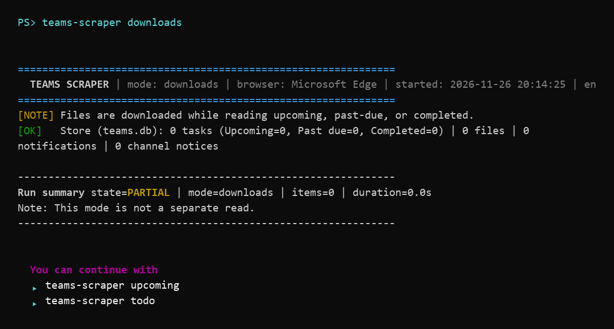

downloads
Where files already saved came from. It does not open the browser. The alias is descargas.
teams-scraper downloadsIt prints the store counts and finishes PARTIAL, because there is no new read. Assignment, channel, and chat files live in descargas/ inside the data folder when download_files is true.

--no-download on another command does not delete what is already downloaded. It only skips downloads for that run.